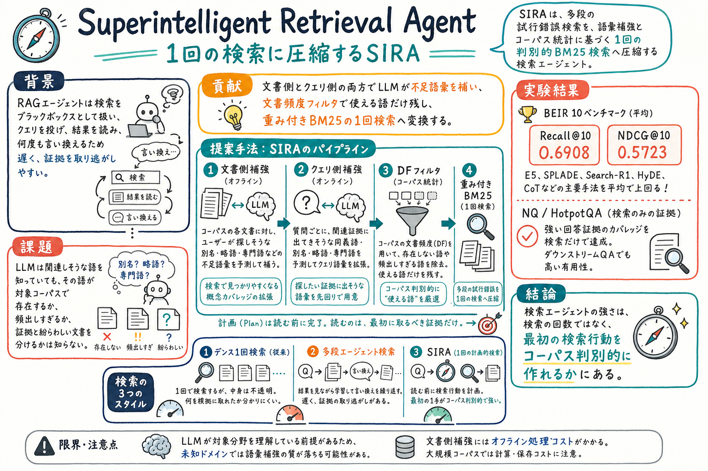

文書側とクエリ側の両方を LLM で補強し、ユーザー語彙と証拠語彙のずれを縮める。

どんな論文か
この論文の中心問いは、検索エージェントは本当に何度も検索しないと強くなれないのか、である。多くの RAG エージェントは、検索をブラックボックスとして扱い、クエリを投げ、結果を読み、そこで見つけた語やエンティティを使って次のクエリを作る。この反復は便利だが、遅く、ノイズが多く、証拠を取り逃がすこともある。
SIRA は、この多段探索を1回の検索行動へ圧縮する。文書側では、LLM が各文書を読み、その文書を探すユーザーが使いそうな別名、略語、専門語などをオフラインで補う。クエリ側では、質問に書かれていないが関連証拠に出そうな語彙を予測する。どちらも文書頻度で検査し、存在しない語や頻出しすぎる語を落とす。
最後の検索は、元クエリと検証済みの補強語を組み合わせた、1回の重み付き BM25 である。ここが面白い。SIRA は dense retrieval より新しい検索器を作るのではなく、BM25 の透明性、IDF、語ごとの制御可能性を、LLM の語彙予測で再評価している。
結果はかなり強い。BEIR 10ベンチマークで平均 Recall@10 0.6908、平均 NDCG@10 0.5723 を報告し、E5、SPLADE、Search-R1、HyDE、CoT などを平均で上回る。NQ と HotpotQA でも、検索だけで回答証拠を含む文書を高い割合で取得できることを示している。
検索拡張エージェントの検索部分を、反復探索ではなく、検索前の語彙設計とコーパス統計で強くする論文である。
著者らは、検索における superintelligence を、多段探索を1回のコーパス判別的な検索行動へ圧縮する能力として定義する。
ここでの賢さは、検索結果を読んでから言い換えることではなく、読む前に関連証拠がどんな語彙で現れ、どの語が紛らわしい文書を分けるかを計画することにある。
課題と貢献
LLM が提案した語を文書頻度で検査し、存在しない語、頻出しすぎる語、判別力の弱い語を除く。
元クエリと補強語を組み合わせ、1回の透明な BM25 検索へ落とす。
関連ラベル、fine-tuning、embedding index を使わず、frozen LLM とコーパス統計だけで動かす。
BEIR の Recall@10 / NDCG@10 で、dense retriever や多段 agentic baseline を平均で上回る。
手法のしくみ
1
文書側補強。各文書を LLM が読み、本文にはないがユーザーが検索時に使いそうな別名、略語、専門語、言い換えを提案する。
2
クエリ側補強。質問ごとに、関連証拠に出てきそうだがクエリには書かれていない語彙を LLM が予測する。
3
文書頻度フィルタ。提案語がコーパス内に存在するか、頻出しすぎないか、検索上の差を作れそうかをチェックする。
4
検索プログラム化。元クエリと検証済み補強語を、重み付き BM25 の1回検索へコンパイルする。
5
取得後の候補選択。BM25 が返した候補から、クエリとの関連性に基づいて top-k を選ぶ。論文の主張は、検索結果を読む前の一手でかなりの差が作れるという点にある。
検証結果
NQ、HotpotQA、FIQA、FEVER、Climate-FEVER、SciFact、ArguAna、SciDocs、Quora、CQADupStack で評価している。
SIRA は 0.6908、E5 は 0.6478、SPLADE は 0.6253、Search-R1(E5) は 0.6161。
SIRA は 0.5723、E5 は 0.5434、SPLADE は 0.5223、Search-R1(E5) は 0.5216。
SciDocs、CQADupStack、ArguAna のように、クエリと文書の語彙ギャップが大きいデータセットで特に改善が目立つ。
NQ と HotpotQA で answer coverage を測り、top-10 で NQ 84.7%、HotpotQA 77.6% を報告している。SIRA は reader なしの検索だけでこの値を出す。
限界と読みどころ
LLM が対象分野を理解している前提がある。未知ドメインや社内固有語が多い環境では、語彙補強の質が落ちる可能性がある。
文書側補強にはオフライン処理コストがある。大規模コーパスや頻繁に更新される文書では、生成、保存、再インデックスの運用設計が必要になる。
Related Work は source にはあるが、PDF の本文入力からは外れているように見える。位置づけを読む時は source 側も確認したい。
superintelligent というタイトルはかなり強い。実体としては、超知能一般ではなく、コーパス統計で接地した一発検索計画として読むと理解しやすい。
複数ツール、ブラウザ、コード実行、長期調査を含む deep research agent 全体に、この結果をそのまま一般化できるかは追加検証が必要である。
読みながら見る図表や節
- Figure 1 は、dense retrieval、多段エージェント検索、SIRA の3つを比較する。SIRA は検索結果を読む前に、専門家らしい検索行動を作る。
- SIRA pipeline 図は、文書側補強、クエリ側補強、DF フィルタ、重み付き BM25 の流れを見る図である。
- Main results table は、BEIR 10ベンチマークでの Recall@10 / NDCG@10 を比較する。平均では SIRA が最も高い。
- QA coverage 図は、NQ と HotpotQA で、検索だけでも回答証拠をかなり拾えることを示している。
次に読むなら
- Beyond Semantic Similarity: Rethinking Retrieval for Agentic Search via Direct Corpus Interaction と合わせると、検索器ではなく検索インターフェースを設計する流れが見える。
- Is Grep All You Need? How Agent Harnesses Reshape Agentic Search と合わせると、grep、BM25、ハーネス、結果の渡し方の違いを比較できる。
- Skill-RAG と合わせると、RAG の失敗を typed failure として扱う方向と、検索前に語彙を判別的に作る方向の違いが整理できる。
- 実務では、wiki や社内文書に文書側補強を入れると、ユーザー語彙と保存語彙のずれを縮める設計に使えそうである。
読後Q&A
SIRA を一言でいうと？
多段検索で試行錯誤する代わりに、文書側とクエリ側の語彙を補強し、DF で効く語だけ残して、1回の重み付き BM25 検索へ落とす手法である。
なぜ BM25 を使うの？
BM25 は語ごとの寄与が透明で、まれな語を IDF で強く評価できるから。LLM が適切な語彙を供給できるなら、正確一致は弱点ではなく制御しやすい検索面になる。
普通のクエリ拡張と何が違う？
クエリだけでなく文書側も補強する点が違う。また、LLM が提案した語をそのまま足すのではなく、文書頻度で存在性と判別力を確認してから使う。
多段検索エージェントより何が良い？
検索結果を何度も読んで言い換える必要がないため、遅延と文脈コストを抑えやすい。BEIR の純粋な検索評価では、平均で Search-R1 や HyDE などを上回っている。
答えを LLM に予測させているだけでは？
論文上はそこを避けている。特に factoid QA では、人名や日付など答えそのものではなく、答えを含む証拠文書に出そうな周辺語彙を生成するように設計している。
どんなデータで強い？
クエリと文書の語彙ギャップが大きい場面で強い。論文では SciDocs、CQADupStack、ArguAna などで E5 より大きな改善が見られる。
実務で使うならどこから？
社内 wiki、技術文書、ログ、研究メモのように、ユーザーが使う言葉と文書に書かれている言葉がずれる場所から試すのがよい。文書側に別名や略語を足すだけでも設計ヒントになる。
一番の注意点は？
LLM が対象分野の語彙をある程度知っている必要があること。未知ドメインでは補強語が外れやすく、DF フィルタだけでは意味的なずれを完全には防げない。